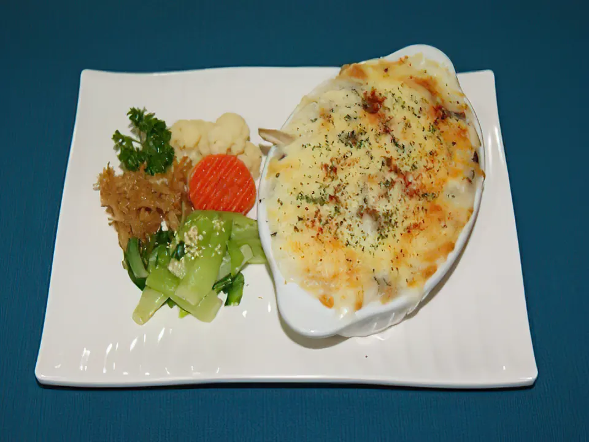
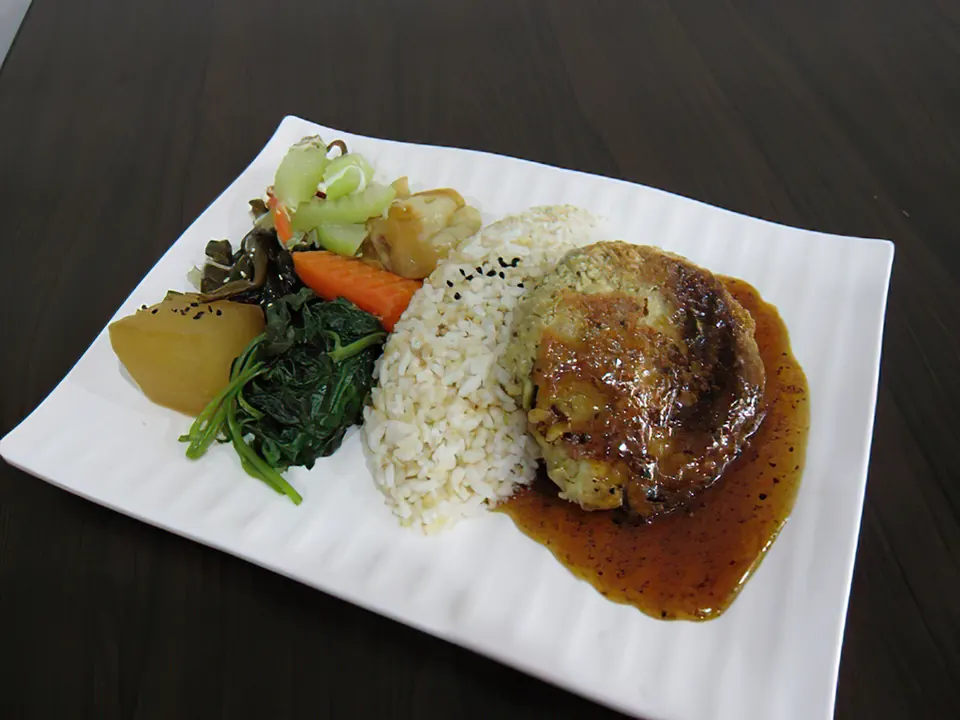
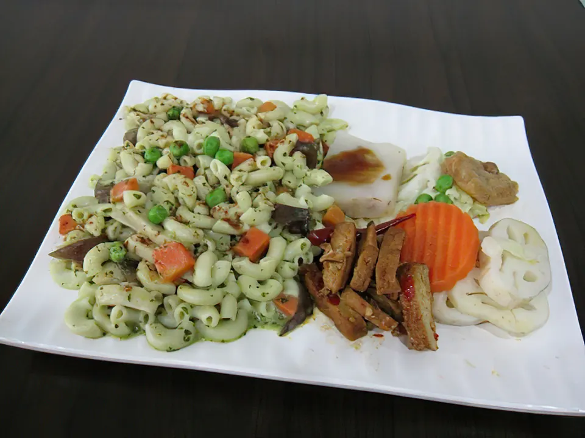

暖心主餐
鐵板豆腐餐
香氣與熱度一起上桌，是讓人想好好坐下來享用的一餐。
把天然食材、現點現做的用心，盛進每天都想再來的一餐。三緣居邀請你，在忙碌的新店日常裡，好好吃一頓蔬食。

暖心蔬食・日日好味
三緣居以健康取向研發多樣蔬食餐點，期待讓吃素與不吃素的朋友，都能在同一張餐桌上享受美味。每份餐點現點現做，將簡單的食材，好好料理。
從一份暖胃的主餐，到富有色彩的小菜搭配，讓每一次來訪都吃得飽足，也吃得自在。
以下節錄自公開評論彙整，保留真實回饋的語氣與重點。
「食物清爽，食材用心，口味剛剛好，服務也很親切。」
「環境舒適，食物新鮮。」
「味美、價廉，吃得飽！」